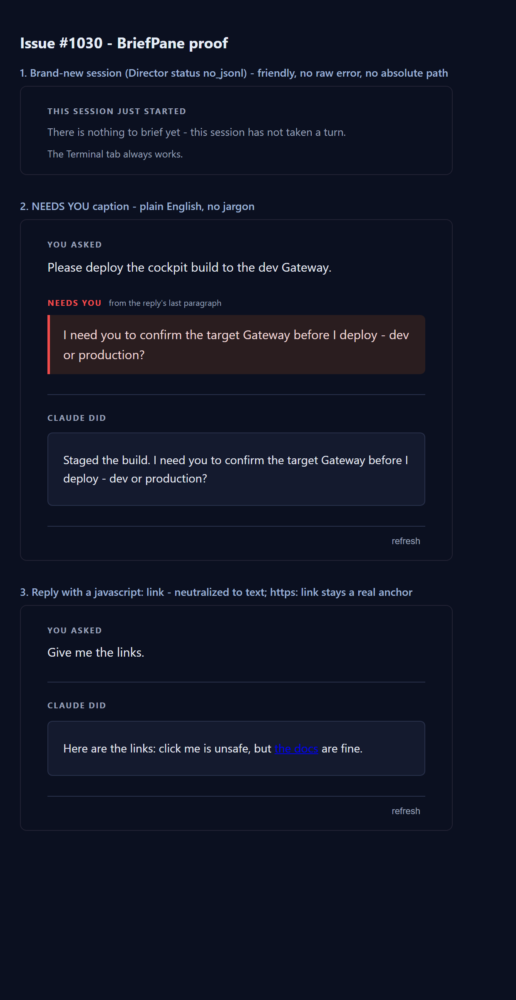

Branch: issue-1030-brief-edge-cases Epic: #967 (holistic QA sweep) Severity: minor
BriefPane.tsx now treats the Director status no_jsonl exactly like
no_session_id via a shared isJustStarted() helper: both render a friendly
"THIS SESSION JUST STARTED" state and NEVER surface brief.error (which is the raw
absolute .jsonl path). The degraded summary tier is guarded the same way so it cannot
leak the path either.packages/client-core/src/history/historyMarkdown.ts now overrides marked's
link renderer and sanitizes the href: only http, https, and
mailto (plus schemeless relative/anchor URLs) are allowed. An unsafe scheme
(javascript:, data:, ...) drops the anchor entirely and renders only the
inert link text. marked 14's own cleanUrl runs encodeURI only and does
NOT block dangerous schemes, so this guard is the fix.brief-verbatim-tag caption
changed from "condenser tier - reply's final paragraph" / "condenser tier - the agent's words" to
the plain-English "from the reply's last paragraph" / "in the agent's own words".| Criterion | Expected | Actual (proof) | Result |
|---|---|---|---|
| A brand-new session's Brief shows a friendly "just started" message with no raw error and no absolute path. | Friendly text; no BRIEF UNAVAILABLE (no_jsonl); no C:\...\uuid.jsonl. |
Scenario 1 in brief-states.png: renders "THIS SESSION JUST STARTED / There is nothing to brief yet - this session has not taken a turn. / The Terminal tab always works." The canned Director error was the absolute path %USERPROFILE%\.claude\projects\...\.jsonl - it does NOT appear. |
PASS |
A reply containing [x](javascript:alert(1)) renders a neutralized/omitted href (renderer test added). |
No live javascript: anchor; normal http/https/mailto links still render. |
historyMarkdown.test.ts (10 tests, all pass): the javascript: and data: cases produce inert text with no <a>; http/https/mailto/relative links render with a new-tab anchor. Live DOM check on Scenario 3: exactly one anchor (https://example.com/guide, target=_blank rel="noopener noreferrer"); "click me" is inert text; no javascript: in the DOM. |
PASS |
| No developer jargon in the user-facing Brief caption. | Caption reads plainly. | Scenario 2 in brief-states.png: caption reads "from the reply's last paragraph" - no "condenser tier". |
PASS |
| Full build gate clean. | cockpit build, lint, Gateway RunCockpitBuild, cc-director.sln all clean. | cockpit vite build OK (108 modules); eslint . clean; client-core vitest 97/97 pass; Gateway build with -p:RunCockpitBuild=true = Build succeeded, 0 warnings/0 errors; dotnet build cc-director.sln = Build succeeded, 0 warnings/0 errors. |
PASS |
Rendered by mounting the unmodified BriefPane with a deterministic window.fetch
shim (temporary harness, removed before hand-off) and screenshotting via Playwright.

apps/cockpit/src/sessions/BriefPane.tsx - isJustStarted() helper; friendly "just started" render for no_jsonl/no_session_id (from both the brief and the degraded summary tier); summary-error guard; plain-English caption.packages/client-core/src/history/historyMarkdown.ts - sanitizeHref() + link-renderer override allowlisting http/https/mailto.packages/client-core/src/history/historyMarkdown.test.ts - new renderer tests (link allowlist + raw-HTML-disabled).No architecture or security-posture drift. This is a pure Cockpit front-end hardening: it strengthens
the existing "transcript can never inject live markup" posture (link scheme allowlist) and stops a
low-severity information leak (absolute file path) - it adds no new container, endpoint, or trust
boundary. No docs/cencon/ update required.
I believe this is finished. All four acceptance criteria are met and proven, and the full build gate is clean.